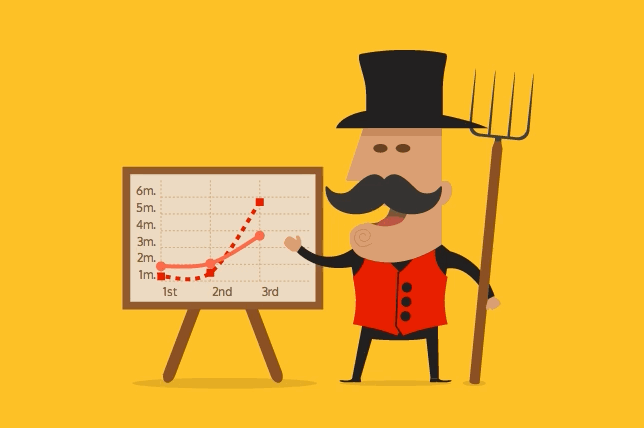
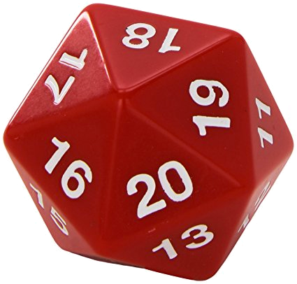
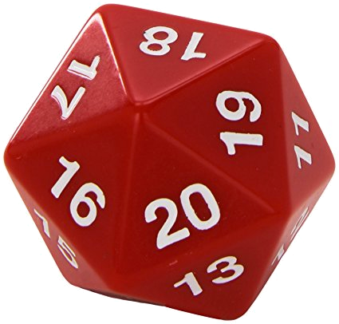
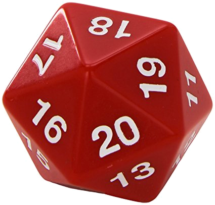

PAINTING WITH DATA
1854
Good charts
save lives 💪
A good chart
should have a story
What is your
chart's purpose?
Who are your audience?
Aesthetics
Continuous
vs
Discrete
Animated aesthetics
⚠️
Photosensitive
seizure warning
The following slide contains
rapidly flashing images
Every second
8,796 photos
are shared on Snapchat.
Common dataviz variable types
| Type of variable | Examples | Appropriate scale |
|---|---|---|
| quantitative/numerical continuous | 1.3, 5.7, 83, 1.5x10-2 | continuous |
| quantitative/numerical discrete | 1, 2, 3, 4 | discrete |
| qualitative/categorical unordered | dog, cat, fish | discrete |
| qualitative/categorical ordered | good, fair, poor | discrete |
| date or time | Jan. 5 2018, 8:03am | continuous or discrete |
| text | The quick brown fox jumps over the lazy dog. | none, or discrete |
Scales map data values
onto aesthetics
| 1 | 2 | 3 | 4 | |
| Position | ||||
| Shape | ||||
| Colour |
Scale functions
| Domain (pixels): | |
|---|---|
| Range (hue): | |
| Input value (pixels): | |
| Output value (hue): |
Choosing a
chart type
Don’t choose a chart type just because you think it looks cool
Choosing a web technology
<svg />
<canvas />
const canvas = document.querySelector('canvas');
const context = canvas.getContext('2d');
context.clearRect(0, 0, width, height);
context.drawImage(object.image, x, y, object.width, object.height);
context.fillStyle = object.fillStyle;
context.fillRect(x, y, object.width, object.height);
WebGL
Just because you can
doesn't mean you should
Don't forget about
HTML & CSS!
- 30%
- 40%
- 50%
- 60%
- 70%
- 80%
- 90%
Choosing a
charting library


 



| D3 | Charting libraries | |
|---|---|---|
| Development time | 🐌 | ⚡️ |
| Flexibility | 💃 | 👴🏻 |
| Learning curve | 😖 | 😌 |
| Performance | 🏎 | 🚗 |
| Code readability | 🙅 | 🤷 |
| Popularity | 👯 | 📭 |
In summary
For prototypes and basic charts,
use a charting library.
For bespoke, complex charts,
choose D3.
D3 + React
Updating the DOM
D3
- Complex animation
- SVG helpers, e.g. axes
React
- Better code structure
- More readable
Have fun with it!
Thanks!
Don't forget to like and subscribe 👍
twitter.com/richardwestenra github.com/richardwestenra richard@richardwestenra.com richardwestenra.com Slides: richardwestenra.com/painting-with-data-talk?showNotes{kind=link}
{kind=link}
{kind=link}
{kind=link}
{kind=link}